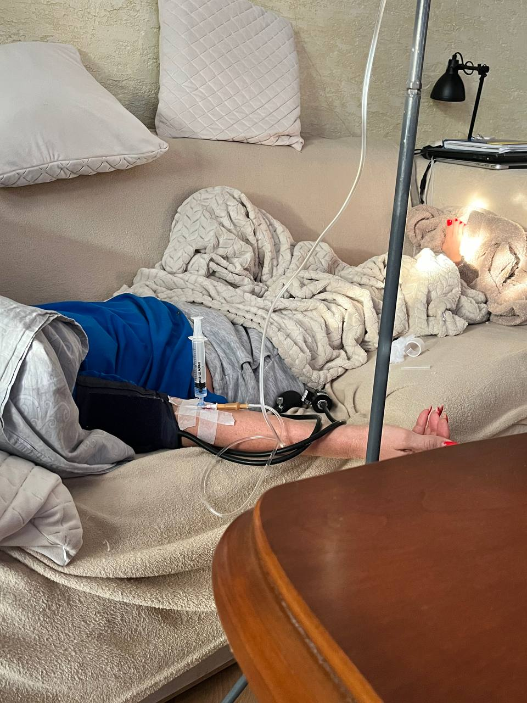

+380(97) 369 76
65
+380(97) 369 76
65Лечение женского алкоголизма в Харькове
Мы вылечили уже более сотни женщин страдающий на алкоголизм в городе Харьков!
Работаем в Одессе, Киеве, Львове, Харькове, Днепре, Запорожье


Бесплатная консультация, работаем круглосуточно 24/7
Мы вылечили уже более сотни женщин страдающий на алкоголизм в городе Харьков!
Работаем в Одессе, Киеве, Львове, Харькове, Днепре, Запорожье
Лечение женского алкоголизма - это комплекс медикаментозно-психологической терапии направленный на выведение из запоя женщины страдающей на алкогольную зависимость с последующим формированием стойкого отвращения к любым спиртным напиткам. Женский алкоголизм это необратимое постоянно прогрессирующее заболевание , при котором у пациентки теряется контроль над объемом выпиваемых спиртных напитков а так же формируется сильная патологическая тяга к выпивке. Постоянное желание выпить и увеличение дозы выпиваемого алкоголя а так же постоянное желание опохмелиться которое формирует будущие запои.
К симптомам женского алкоголизма можно отнести:
Важным отличием женского алкоголизма является то что организм женщины в разы хуже переносит интоксикацию вызванную вследствие неконтролируемого злоупотребление спиртным. Стоит добавить что одна из главных проблем в женском алкоголизме то что у больной на алкоголизм женщины пропадает критика к себе и своим проблемам а так же появляется бесконечное вранье и скрытность от родственников.
Женский алкоголизм делиться на три стадии:
1.Начальная или первая стадия - женщина употребляет алкоголь практически на постоянной основе , оправдывается стрессом или тяжелым днем. На первой стадии формируются такие симптомы: пьет без повода , пьет для улучшения настроения , утрата контроля над выпиваемым - пьет что бы уснуть, смена планов ради выпивки , смена круга общения на пьющий , нарушается сон , появляется агрессия.
Первая стадия длиться до пяти лет и является самой короткой из всех.
2.Физическая зависимость от алкоголя - на второй стадии кроме психологической зависимости от алкоголя формируется и физическая зависимость которая проявляется в формировании симптома опохмеления. Так же к симптомом второй стадии женского алкоголизма можно отнести: первые запои , сильно желание похмелиться после пьянки , суицидальные мысли , психозы , агрессия , амнезии , нарушение сна и бессонницы.
Вторая стадия длиться от пяти до двадцати лет и требует безусловного медицинского вмешательства.
3.Полная деградация личности - на третей стадии женского алкоголизма употребление спиртных напитков имеет ежедневный характер и начинается с самого утра. К вышесказанным симптомом присоединяются новые: Аморальное и асоциальное поведение , сильная деградация и снижение интеллекта, потеря чувства ответственности, тяжелые хронические заболевания в следствии очень длительного срока употребления спиртных напитков.
Третья стадия женского алкоголизма длиться до конца жизни.
На каждой стадии женского алкоголизма организму наноситься непоправимый ущерб - обращайтесь за медицинской помощью пока не стало поздно.
Основной причиной женского алкоголизма в современном мире является большой уровень стресса и низкий уровень толерантности женского организма к спиртным напиткам, простыми словами женщине намного проще спиться чем мужчине. К вторичным причинам можно отнести:
Первым делом нужно исключить любой доступ к спиртным напиткам:
Если ваш близкий человек начал часто выпивать и обосновывать очередной прием алкоголя в целях успокоения и расслабления , стоит обратиться к врачу наркологу - это может быть начало тяжелой болезни которая постоянно будет прогрессировать и в конечном итоге приведет к полной потерли личности.
Что бы вылечить женский алкоголизм вам нужно обратиться к врачу-наркологу который специализируется на проблеме женского алкоголизма. Чаще всего лечение начинается с медикаментозной терапии - капельницы от алкоголя - с целью выведение пациентки из запоя или состояния длительной интоксикации. Вторым шагом в лечении женского алкоголизма является специфическое кодирование от алкоголизма с целью создания стойкого отвращения к алкогольным напиткам на психическом и физическом уровне. Третий этап в лечении зависимости всегда является длительная моно или групповая психотерапия - этот метод не популярный в Украине но является самым эффективным в лечении любой зависимости.
Стоит помнить что лечении алкоголизма это длительное иногда пожизненное лечение , самая главная цель в лечении женской зависимости это создание ощущение полного отвращения к спиртным напиткам.
Цена на лечение женского алкоголизма в Харькове начинается от 1499грн и может меняться в зависимости от тяжести и длительности употребления спиртных напитков.
Лечение алкоголизма Харьков От 1499 грн
Вывод из запоя Харьков От 1499 грн
Вывод из запоя на дому Харьков От 1699 грн
Капельница от алкоголя Харьков От 1499 грн
Капельница от алкоголя на дому Харьков От 1699 грн
Лечение пивного алкоголизма Харьков От 1499 грн
Лечение женского алкоголизма Харьков От 1499 грн
Кодирование от алкоголизма Харьков От 3999 грн
Кодирование уколом Харьков От 3999 грн
Подшивка от алкоголя Харьков От 9999 грн
Кодирование по методу Довженко От 14999 грн
Эффективным лечением женского алкоголизма можно назвать только в том случаи - если удалось ввести пациентку в длительную ремиссию , сформировать у нее полное отвращение к спиртным напиткам а так же поменять свои убеждения в пользу полной трезвости , помните что зависимый человек никогда не сможет употреблять алкоголь “как все” , задача врача нарколога заключается в донесении этой информации зависимому человеку с помощи психотерапии и в дальнейшем сформировать у него пожизненную трезвость.
Лечение женского алкоголизма в Харькове проходит через четыре главных этапа :
Лечение женского алкоголизма длительный процесс который может длиться месяцами.
Кодировка от женского алкоголизма - это эффективный метод в лечении зависимости , позволяющий пациентке полностью отказаться от употреблением спиртных напитков. Сформировать отвращение на психическом и физическом уровне а так же снять патологическую тягу к алкоголю. На время кодирование у пациентки уменьшается патологическое влечение к спиртным напиткам и формируется с помощью психотерапии убеждения в пользу трезвой жизни. Кодирование от алкоголизма один из основных этапов в лечении женской зависимости.
На данный момент в городе Харьков кодируют с помощью трех основных методов специфического лечения зависимости:
Каждый метод лечения алкоголизма имеет свои плюсы и минусы но стоит понимать что любой метод в борьбе с зависимостью эффективен.
Медицинская служба UmbrellaPlus всегда готова помочь в лечении женского алкоголизма , оказать пациентке качественную квалифицированную медицинскую помощь а так же гарантировать избавление от пагубной привычки. Лечение женского алкоголизма трудоёмкий и длительный процесс он требует квалифицированного врача нарколога а так же качественной и длительной медикаментозно - психологической помощи. Что бы обратиться за помощью в лечении женского алкоголизма в Харькове позвоните по номеру 050-021-69-57.
Хорошим народным методом в лечении женского алкоголизма и снятия интоксикации будет употребление большого количества щелочной воды - сорбенты , аминокислоты по типу бетаргин и гепаргин и легкие успокоительные - пустырник, валерьянка. Помните что сама проблема находиться на психиатрическом уровне и требует работы психиатра и психотерапевта. Не занимайтесь самолечением это может быть опасным для вашего здоровья. Обратитесь за наркологической помощью в городе Харьков по номеру 050-021-69-57.
Последствия женского алкоголизма можно разделить на две группы:
Социальные и психологические последствия женского алкоголизма - к ним относятся:
Физические и органические последствия женского алкоголизм - к ним относят:
Помните что каждый новый запой это прогрессирование заболевания , обращайтесь к наркологу пока не стало слишком поздно. Что бы обратиться врачу наркологу в городе Харьков вам нужно позвонить по номеру 050-021-69-57
Приезд в течении 60 минут от момента поступления заявки
Наши филиалы есть во всех больших городах Украины.
Мы оказываем профессиональную доказательную медицинскую помощь. Гарантией является наше имя.
Номер телефона:
+380 (97) 369 76 65
+380 (50) 021 69 57
Адрес главного офиса: г. Одесса Армейская 18/1
Офис вашего города нужно уточнить
Работаем в: Одессе, Киеве, Львове, Харькове, Днепре,
Запорожье
Telegram: t.me/umbrellaplus
График работы: Круглосуточно